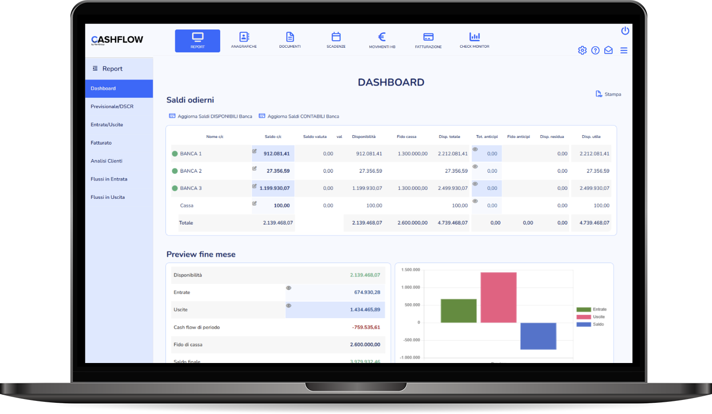

Controllare
la liquidità
Consulta i saldi delle banche e tieni insieme scadenze, incassi e pagamenti. Una visione aggiornata delle disponibilità dell’azienda.
Saldi bancari · Scadenze · Affidamenti
Saldi, scadenze, incassi e pagamenti in un unico ambiente, per conoscere la liquidità disponibile e pianificare i prossimi mesi.
Iscriviti alla demoOgni giovedì alle 10:00 · 45 minuti · Relatore live

Tre attività concrete per organizzare la gestione finanziaria quotidiana.
Consulta i saldi delle banche e tieni insieme scadenze, incassi e pagamenti. Una visione aggiornata delle disponibilità dell’azienda.
Pianifica entrate e uscite, anche extracontabili, e valuta come cambierà la liquidità nei prossimi 30, 60 e 90 giorni.
Collega i conti bancari e abbina i movimenti alle fatture, riducendo i controlli manuali e aggiornando lo scadenzario.
Cash Flow è pensato per le piccole e medie imprese con una risorsa dedicata all’amministrazione.
Uno strumento pratico per chi segue l’operatività e per chi ha bisogno di conoscere la situazione finanziaria prima di decidere.
Riunire le informazioni finanziarie in un ambiente condiviso, senza disperderle tra file e strumenti diversi.
Dedicare meno tempo ai controlli ripetitivi e più tempo alla gestione dell’azienda.
Aggiornare le previsioni e individuare per tempo le esigenze di liquidità.
Una demo live per vedere come il software supporta la gestione finanziaria quotidiana della tua azienda.
Accedi al modulo Zoom per scegliere l’appuntamento e ricevere il link.
Per informazioni: eventi@goldtesoreria.it